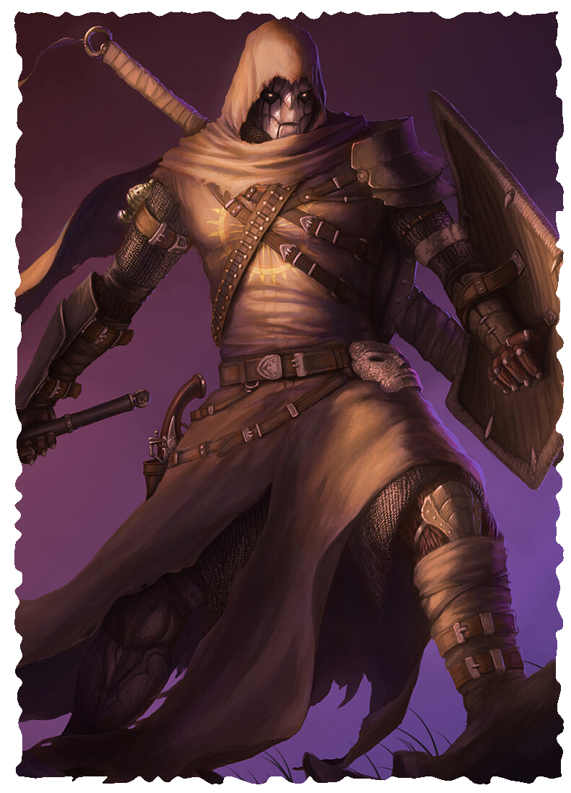

CLOCKWORK
While golems made out of cogs and wires are an old tradition, attempts to grant such things a soul have proved futile.
When a person is dying, parts of the body can be connected to one of these golems, often called a Shell. This most often happens when a wealthy family bears a child who bears some defect and is not expected to survive. The soul is housed in what little flesh remains, and their ancestry becomes completely indistinguishable. It is impossible to tell whether a clockwork was born of human, drakken, or beastman.
Once Mortal, Never Again Since their soul is still bound by flesh rather than metal, they are still mortal. If this part is ever damaged, the soul is lost. They still must rest and eat, though the mechanism through which they consume food totally dissolves it into a nutrient solution absorbed by the flesh, and they cannot taste a thing. The body breathes for the flesh, and can breathe in extreme environments such as underwater. Their body can become dormant, only using enough power to keep the host alive. If the body ever fully shuts down, the host dies.
Form and Function Shells come in many shapes and sizes. Some are 10-foot tall mechs built for destruction, while others are small cat-like constructs that can climb walls and navigate small tunnels. The flesh to which the soul is bond also takes many forms. A few constructs are mostly flesh, their shells acting more like advanced gear that keeps them alive. For some, all that remains of their original body is a mark drawn in their blood, which could be destroyed if smudged.
Common Names: Some clockwork use names given to them by their creators. These can be nicknames or strings of letters and numbers. Clockwork might choose names they find interesting or use names from their previous life.
CREATING A CLOCKWORK
Attribute Modifiers equal to the score minus 10
Perception equals your Intellect score
Defense equals 5 + your Agility modifier
Health equals your Strength score
Healing Rate equals one-quarter your Health, round down
Size 1/2 or 1 or 2, Speed 8, Power 0
Damage 0, Insanity 0, Corruption 0
Language and Professions You speak the Common Tongue. Pick two professions.
Mechanical Body You sink when submerged in liquid. Your advanced filter allows you to breathe in any environment where there is air or water.
Repairing Damage Life spells heal you for half as much as they normally would. Instead, spells and effects that remove damage from objects can target you.
Additionally, a creature can use an action to start repairing you with a tool kit. The creature must work for at least 4 hours, during which you are considered an object, and cannot move, talk, or perceive your surroundings. At the end of this time, it makes an Intellect challenge roll with 1 bane. On a success, you heal damage equal to your healing rate.
Specialized Construction Choose a Clockwork Feature from the table below.
LEVEL 4 EXPERT CLOCKWORK
You either learn one spell or gain two additional Clockwork Features.
CLOCKWORK FEATURES
- Armored Plating Thick metal armor plates. Your Defense is 8. You cannot equip armor. You must be size 1 or larger. Incompatible with Life-Like Appearance.
- Interior Chamber You have a compartment that can fit a creature of a smaller size or objects that fit in a yard cube. You must be size 1 or larger. The contents are totally obscured and can't be targeted by attacks.
- Life-Like Appearance You are masterfully crafted to pass for a living being (unless closely scrutinized). Incompatible with Armored Plating. Your identity is revealed upon using any Clockwork feature.
- Levitation You float gently a few inches above the ground. You move at full Speed across difficult terrain.
- Phonograph A wax-cylinder recording and playback device. At any time, you can begin recording up to 1 minute of audio, during which you overwrite any audio previously recorded and and capture all sounds occurring around you. You can use an action to play the recording any number of times until a new recording is made. Any creature that sees you while you play the recording knows that it originates from you. A creature that cannot see you can make an Intellect challenge roll with 1 boon to tell the sound is an imitation.
- Sensors You can overload your sensors for up to 1 minute to see via heat instead of light. For the duration, you are considered sightless, and cannot be blinded. You can detect any living creatures within 15 yards of you. Such creatures cannot become hidden from you for the duration.
- Spider Climb Miniature barbs built into your frame. You ignore the effects of difficult terrain when climbing, and you make challenge rolls to climb with 1 boon. You must be size 1 or smaller.
- Spring-Leap Pistons As an action, you can jump horizontally up to 15 yards. You can also jump straight up 10 yards. You never take damage from landing after a fall.
- Turn-Key You can increase the number of actions you can use on your turn by one. When you finish a turn, roll a d6. If you roll an odd number, you become an object at the end of the round. While you are an object, you cannot use actions, move, talk, or perceive your surroundings. Any creature that can reach you can use an action to wind up your key.